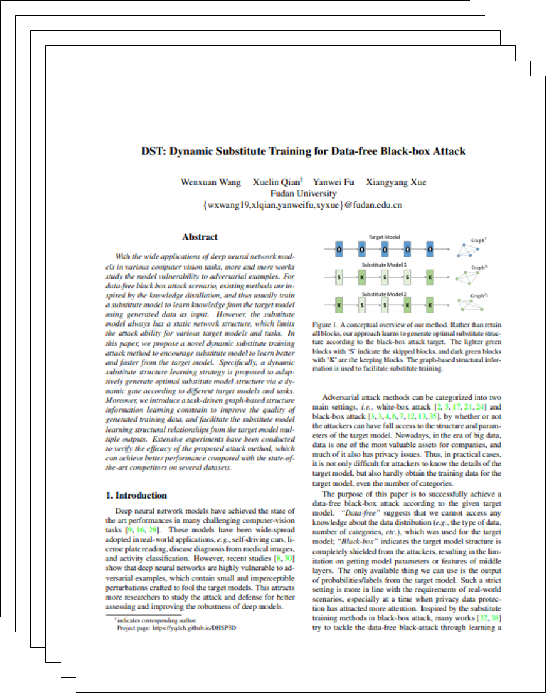

DST_Attack Framework
|
Fudan University
|
|
With the wide applications of deep neural network models in various computer vision tasks,
more and more works study the model vulnerability to adversarial examples. For data-free black box attack scenario,
existing methods are inspired by the knowledge distillation, and thus usually train a substitute model to learn knowledge
from the target model using generated data as input. However, the substitute model always has a static network structure,
which limits the attack ability for various target models and tasks. In this paper, we propose a novel dynamic substitute
training attack method to encourage substitute model to learn better and faster from the target model. Specifically, a
dynamic substitute structure learning strategy is proposed to adaptively generate optimal substitute model structure via
a dynamic gate according to different target models and tasks. Moreover, we introduce a task-driven graph-based structure
information learning constrain to improve the quality of generated training data, and facilitate the substitute model
learning structural relationships from the target model multiple outputs. Extensive experiments have been conducted to
verify the efficacy of the proposed attack method, which can achieve better performance compared with the state-of-the-art
competitors on several datasets.
|
|
We propose a novel and task-driven Dynamic Substitute Training attack framework (DST) method to boost the
data-free black-box attacking performance. As shown in following figure, (a) Illustration of our DST attack framework. DST utilizes a
Graph-based Structural Information Learning strategy (GSIL) to train the generator and substitute model. (b) Schematic diagram of Dynamic
Substitute Structure Learning strategy (DSSL). The DSSL of DST is applied to automatically generate optimal substitute model structure
according to different targets.
|
|
|
|
DST_Attack Framework
|
|  |
DST: Dynamic Substitute Training for Data-free Black-box Attack.
Wenxuan Wang, Xuelin Qian*, Yanwei Fu, Xiangyang Xue [Paper] [Bibtex] [Codes] |
Acknowledgements
The website is modified from this template.
|